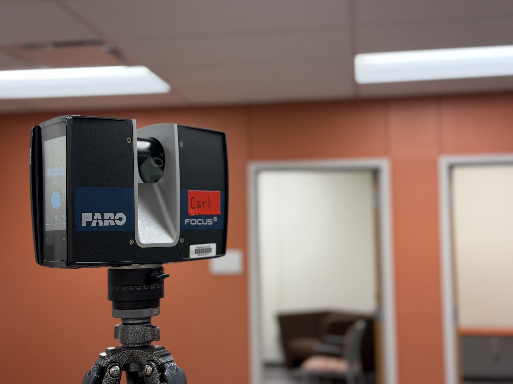
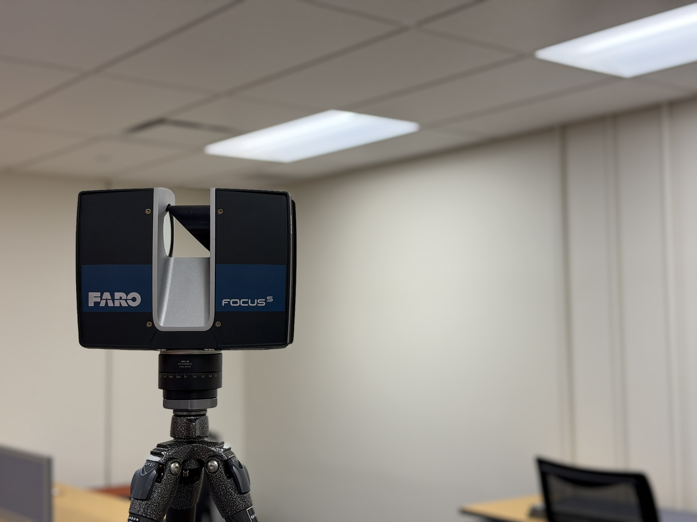

For the VAR Lab, I was tasked with scanning a series of rooms using the FARO Focus S terrestrial laser scanner (nicknamed Carl) to capture accurate spatial measurements. The resulting scan data supports pre-visualization and layout planning for a future video/podcast studio, helping the team evaluate room dimensions and plan equipment placement before any build-out begins.
Using the point cloud as a measurable reference allows faster iteration on studio design decisions—such as camera sightlines, lighting positions, and acoustic treatment—while reducing guesswork and rework later in the process.

